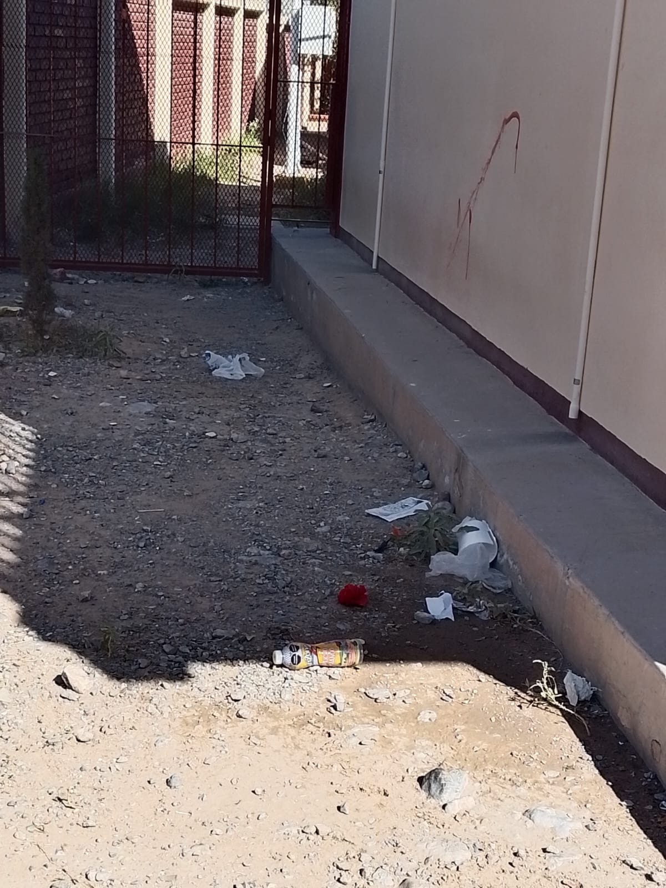
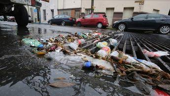

EL PROBLEMA AMBIENTAL ACTUAL
El aumento desmedido en la generación de basura y el consumo de productos de un solo uso representan una de las mayores amenazas para los ecosistemas locales y globales.
Cuando los desechos no se gestionan adecuadamente, contaminan el suelo, los mantos acuíferos y el aire, afectando directamente la salud de nuestra comunidad y la biodiversidad de nuestra región.
La contaminación por plásticos es una de las mayores amenazas ambientales de nuestro tiempo. Su origen está en un modelo de producción y consumo que ha inundado al planeta de productos desechables diseñados para usarse unos minutos y permanecer cientos de años.
¿El resultado? Toneladas de residuos en todos los rincones del planeta: desde el fondo del mar hasta el aire que respiramos.

CONTAMINACIÓN DE SUELOS
Los plásticos tardan cientos de años en degradarse y alteran la fertilidad de la tierra.

ACUMULACIÓN URBANA
El exceso de desechos obstruye drenajes y provoca focos de infección en espacios públicos.
PRINCIPALES CONSECUENCIAS
IMPACTO EN LA FAUNA
Los animales confunden los residuos plásticos con alimento, poniendo en riesgo su supervivencia y alterando las cadenas alimenticias.
CALENTAMIENTO GLOBAL
La descomposición de basura orgánica mezclada con inorgánica libera gases de efecto invernadero como el metano.
AGOTAMIENTO DE RECURSOS
Producir materiales nuevos constantemente exige una extracción excesiva de agua, madera, petróleo y minerales.